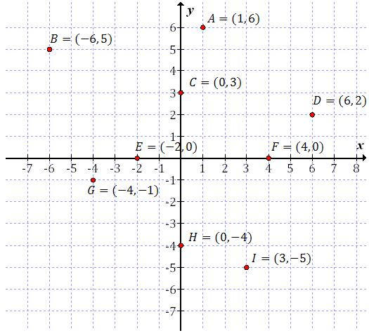
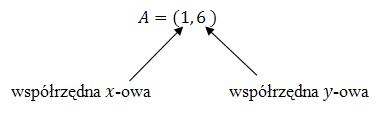
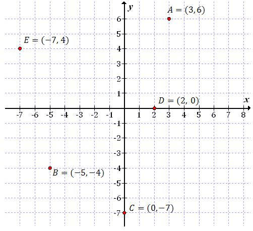
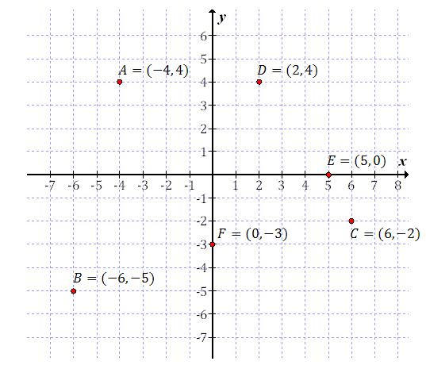

Podstawową umiejętnością pozwalającą na rysowania wykresów funkcji, jest
zaznaczanie punktów w układzie współrzędnych.
W poniższym układzie współrzędnych zaznaczono \(9\) punktów. W nawiasie zapisano
również ich współrzędne. 
Zawsze na pierwszym miejscu zapisujemy współrzędną \(x\)-ową, a na drugim \(y\)-ową: 
Zanim przystąpisz do rysowania wykresów funkcji, to dobrze opanuj odczytywanie i
zaznaczanie punktów w układzie współrzędnych.
Zaznacz w układzie współrzędnych następujące punkty \(A = (3, 6)\), \(B = (-5,
-4)\), \(C = (0, -7)\), \(D = (2, 0)\), \(E = (-7, 4)\).

Zaznacz w układzie współrzędnych następujące punkty \(A = (-4, 4)\), \(B = (-6,
-5)\), \(C = (6, -2)\), \(D = (2, 4)\), \(E = (5, 0)\), \(F = (0, -3)\).
